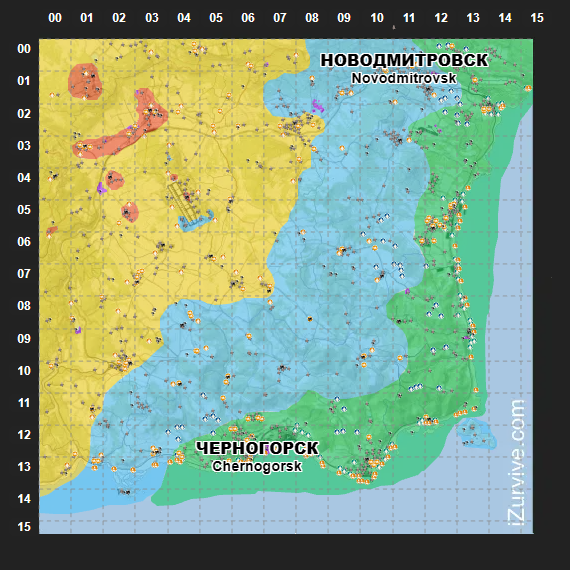

初階物資區域，主要集中在東側與南部沿海一帶。
如果地圖沒有顯示
可能是瀏覽器或 iZurvive 暫時限制第三方 iframe。可直接在新分頁開啟原站完整地圖。
開啟 Chernarus+ iZurvive 地圖 ↗CHERNARUS+ LOOT TIER OVERLAY
開啟原尺寸地圖 ↗戰利品區域等級
這裡顯示的是你指的那種「直接覆蓋在 Chernarus+ 地圖上的顏色區域」，不是 PVP 區域，也不是抽象示意圖。顏色用來快速辨識不同 Loot Tier。

點擊圖片可查看原尺寸中階物資區域，涵蓋大面積中部與內陸地帶。
高階物資區域，主要往西部與西北方向延伸。
最高階／特殊高價值區域，會以局部紅色色塊標示。
玩家參考Loot Tier 代表物資生成階級；同一 Tier 內實際會出現哪些物品，仍取決於伺服器的物資設定與物品類別。
ASHZONE CHERNARUS+ SURVIVAL GUIDE
車諾魯斯探索重點
Chernarus+ 是 DayZ 經典主地圖。南部與東部沿海通常是新角色常見活動區，深入內陸後地形、軍事設施與 Loot Tier 會逐步提升。建議搭配上方 iZurvive 地圖規劃路線。
MAPCHERNARUS+DAYZ OFFICIAL TERRAIN
MAJOR LOCATIONS
主要城市與高價值地點
以下列出 Chernarus+ 最常用於定位與規劃路線的地點。
Chernogorsk｜車諾戈爾斯克
南部大型沿海城市，是重要的城市補給與定位節點。
Elektrozavodsk｜埃列克特羅
東南沿海大型城市，適合作為沿海道路與內陸路線的轉折點。
Berezino｜別列津諾
東岸大型城市，周邊聚落與道路密集，適合補給與集合。
Novodmitrovsk｜諾沃德米特羅夫斯克
北東部大型城市，深入內陸後的重要城市節點。
NWAF｜西北機場
Chernarus+ 最具代表性的高價值軍事區之一，風險與資源價值都很高。
Tisy Military Base｜提西軍事基地
西北深處的重要高階軍事區，前往前建議先做好撤離與補給規劃。
ASHZONE FIELD NOTES
AshZone 生存提示
01先用 iZurvive 確認目前位置與下一個城市，再決定長距離移動方向。
02Loot Tier 越高不代表一定安全；高價值軍事區通常也代表更高的玩家遭遇風險。
03沿海區適合初期補給，想找高階裝備則需要逐步深入內陸與西北區域。
04AshZone 的 AI、任務、PVP 與特殊事件配置可能額外改變某些地點的實際危險度。